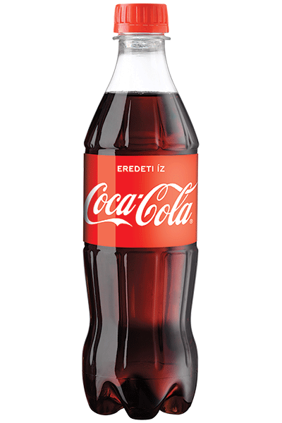
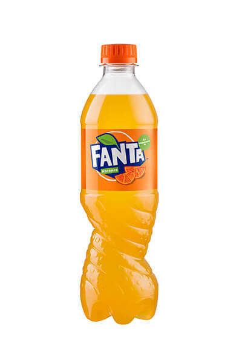
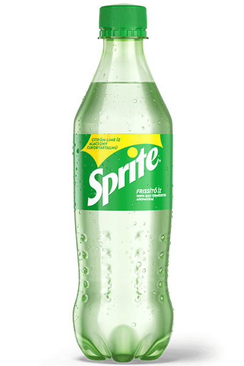

Coca Cola
A Cola egy szénsavas üdítőital kóladiós és citromsavas ízzel. Napjainkban az egyik legnépszerűbb üdítők közé tartozik.

Fanta
A Fanta egy narancs ízű szénsavas üdítőital. A Fantát a boltokban többféle izesítésben is meg lehet találni.

Sprite
A Sprite egy citromos ízesítésű szénsavas üdítőital. A Spritebol régebben egy különleges uborkás ízt is lehetett kapni.